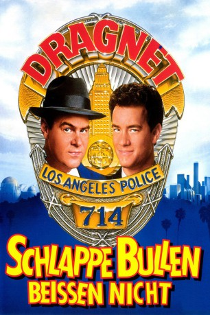
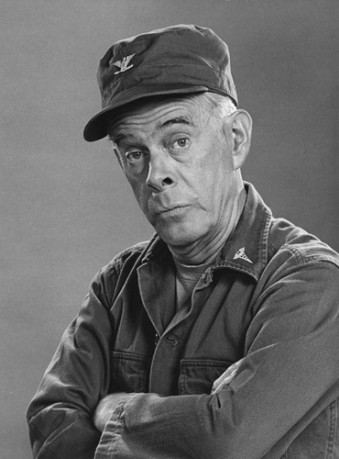
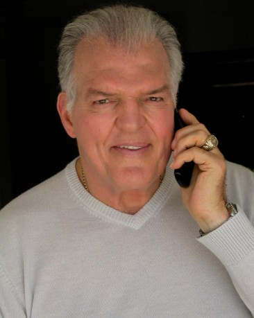
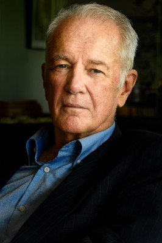
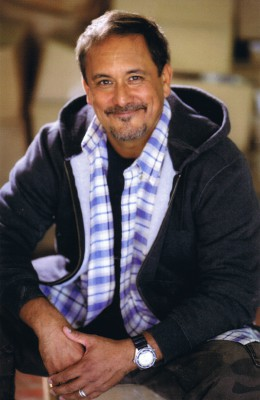
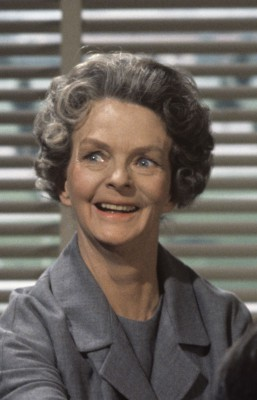

#5314 Schlappe Bullen beißen nicht
Alternativ: Dragnet
 
 IMDB-Wertung: 5.9 / 10
IMDB-Wertung: 5.9 / 10  Metascore: 0
Metascore: 0 
Der gradlinige, gesetzestreue Cop Joe Friday muss mit seinem Partner Pep Streebeck auskommen. Das ist nicht so einfach, denn Streebeck ist ein Chaot. In letzter Zeit kommt zu ihrem angespannten Partner-Verhältnis ein umso mysteriöserer Fall hinzu, der den beiden Kopfzerbrechen bereitet. Es sind nämlich einige sehr komische Diebstähle geschehen - eine Fledermaus, eine riesige Schlange und die Mähne von einem Löwen, alles aus einem Zoo. Dazu kommen noch einige Chemikalien und sogar mehrere Polizeiautos sind entwendet wurden. Alle Verbrechen haben eine Gemeinsamkeit: Am Tatort wurden Visitenkarten mit der Aufschrift "Pagan" hinterlassen. Nun liegt es an den beiden chaotischen Ermittlern, in den schäbigsten Gegenden der Stadt ihre Nachforschungen anzustellen, was zu nicht wenigen, komischen Momenten führt...
Jahr: 1987
Dauer: 105 Minuten
FSK: 12
Land: USA Studio: Universal PicturesTonspuren: DD2.0 - ,
Untertitel:
Auflösung: 1080p (1920x1040) Größe: 9093 MB
Genre: Komödie, Krimi
Regisseur: Tom Mankiewicz
Drehbuch: Kang Chien Chiu
Soundtrack:
Darsteller:
 Dan Aykroyd als Friday
Dan Aykroyd als Friday Tom Hanks als Streebek
Tom Hanks als Streebek Christopher Plummer als Whirley
Christopher Plummer als Whirley-  Harry Morgan als Gannon
 Alexandra Paul als Connie Swail
Alexandra Paul als Connie Swail-  Jack O'Halloran als Emil Muzz
 Elizabeth Ashley als Jane Kirkpatrick
Elizabeth Ashley als Jane Kirkpatrick Dabney Coleman als Jerry Caesar
Dabney Coleman als Jerry Caesar Kathleen Freeman als Enid Borden
Kathleen Freeman als Enid Borden-  Bruce Gray als Mayor Parvin
- Lisa Aliff als April
- Josh Cruze als Police Officer
- Juliana Donald als Zookeeper
- Ava Fabian als Baitmate
- Kimberly Foster als Betsy Blees
-  Ruben Garfias als Tough #2
- Bert Hinchman als Night Watchman
- Lisa London als 1982 Redhead
 Stuart Quan als Tough #3
Stuart Quan als Tough #3 Casey Sander als Phoney CHP #1
Casey Sander als Phoney CHP #1- Dona Speir als Baitmate
-  Meg Wyllie als Mrs. Gannon
 Conrad Hurtt als Reveler , uncredited
Conrad Hurtt als Reveler , uncredited- Richard Partlow als Detective , uncredited
- Harry Perry als Guitar Player in Opening Scene , uncredited
- Shannon Tweed als Baitmate , uncredited
- Lenka Peterson als Granny Mundy
- Julia Jennings als Sylvia Wiss
- Joe Altmark als Milkman
- Nina Arvesen als Lady Motor Cop
- Fred Asparagus als Tito Provencal
- Peter Aykroyd als Phoney CHP #2
- Larry Bilzarian als SWAT Trooper
- Jim Boeke als Nectar Pagan
- Sandra Canning als Baitmate
- William Chalmers als Observatory Pagan
- Donald Craig als Announcer
- Karen Criswell als Mansion Cellist
- Jennifer Curry als Mansion Violinist
- Gray Daniels als Crewman #1
- Gary Lee Davis als Leggings Pagan
- Susan Deemer als Coffee Bar Dancer
- Sandra Eng als TV Reporter
- Sharon Gilchrist als Mansion Musician
- Chester Grimes als Pagan
- D.D. Howard als Officer Robin Gilbert
- Peter Leeds als Roy Grest
- Margaret Lenzey als Baitmate
- Lori Leonelli als Baitmate
- Kent MacLachlan als Young Officer
Datei: X:\1987\Schlappe Bullen beißen nicht (1987, FSK12, 1920x1040).mkv seit 12.01.2017
Festplatte: HD 1987-1991
 Es gibt insgesamt 50 Filme in der Gruppe '1987'
Es gibt insgesamt 50 Filme in der Gruppe '1987'